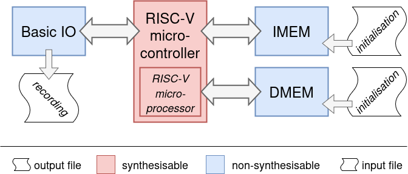
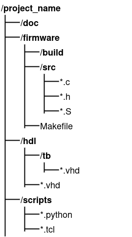
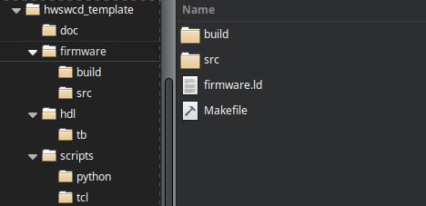

In this course you will have to work both on the hardware and on the software. To facilitate this kind of designing and developing, it will be invaluable to run simulation as smooth as possible. Before jumping to the testbench, it might useful to briefly refresh the concept of synthesisable hardware.
All hardware description languages (HDLs) have a lingo that is used to describe a hardware design. Typically, these HDLs also have parts of their language dedicated to verification. The parts of the HDL that describe components that can be made are the synthesisable subset of that language.
Example of synthesiable code:
z <= x when y = '0' else '0';
Example of non-synthesisable code:
process (y, x)
begin
z <= '0'';
wait until y = '0'
z <= x;
end process;
Non-synthesisable code is used for testing/verification. A typical use for it is to describe models of component.
library IEEE;
use IEEE.STD_LOGIC_1164.ALL;
use IEEE.NUMERIC_STD.ALL;
use IEEE.STD_LOGIC_MISC.or_reduce;
use ieee.std_logic_textio.all;
use STD.textio.all;
entity basicIO_model is
generic (
G_DATA_WIDTH : integer := 32;
FNAME_OUT_FILE : string := "data.dat"
);
port (
clock : IN STD_LOGIC;
reset : IN STD_LOGIC;
di : IN STD_LOGIC_VECTOR(G_DATA_WIDTH-1 downto 0);
ad : IN STD_LOGIC_VECTOR(G_DATA_WIDTH-1 downto 0);
we : IN STD_LOGIC;
do : OUT STD_LOGIC_VECTOR(G_DATA_WIDTH-1 downto 0);
writing_out_flag : OUT STD_LOGIC
);
end entity basicIO_model;
architecture Behavioural of basicIO_model is
-- localised inputs
signal clock_i, reset_i, we_i, writing_out_flag_o : STD_LOGIC;
signal di_i, ad_i, do_o : STD_LOGIC_VECTOR(G_DATA_WIDTH-1 downto 0);
file ofh : text;
begin
-- (DE-)LOCALISING IN/OUTPUTS
clock_i <= clock; reset_i <= reset;
di_i <= di; ad_i <= ad;
we_i <= we;
do <= do_o; writing_out_flag <= writing_out_flag_o;
-- COMBINATORIAL
writing_out_flag_o <= we_i when ad_i = x"80000000" else '0';
-- MEMORY
PMEM: process(reset_i, clock_i)
variable v_line : line;
variable v_temp : STD_LOGIC_VECTOR(G_DATA_WIDTH-1 downto 0);
variable v_pointer : integer;
begin
if reset_i = '1' then
file_open(ofh, FNAME_OUT_FILE, write_mode);
elsif rising_edge(clock_i) then
if we_i = '1' then
if ad_i = x"80000000" then
write(v_line, di_i);
writeline(ofh, v_line);
end if;
end if;
end if;
end process;
end Behavioural;
This example shows the model for a basic input/output component. This code is non-synthesisable, but will be useful for testing. For the sake of completeness, the content and the working of this model are discussed below.
The first part is the setting of the library and the usage of the packages. Note that there are includes for text_io. This is a first sign of the fact that this code will not synthesise.
In de entity definition, two generics are used. These generics are parameters that are defaulted to the set values. As a reminder it is mentioned that these default values are only used when they are not explicitly set upon instantiation.
Signals are made to interconnect things in this entity. Although it is not mandatory, this model ties signals to all the inputs and outputs. As a reminder for the hardware designer, the signals are suffixed with either _i for inputs or with _o for outputs.
Some simulators behave (slightly) different when ports are used in comparison to when signals are used. Another reason for outputs to add a signal is that these signals can be use interally as well, in contrast to out ports.
Finally, signals are declared between architecture and its begin. This is also the location where component declarations happen (which is not the case in this model).
When you have to make a component declaration, simply copy-paste the entity of that component here. Then replace the keyword entity with the keyword component.
Between the begin and and of the architecture, the desired behaviour is described. In this case the following functionalities are implemented:
With this description of the model (and the earlier C-example for printing), it should be clear what it is used for 😉.
The testbench that will be used in this course will start with a description of the architecture shown below.

At the heart of the implementation sits the RISC-V microprocessor. This is the processor that you have been working on in an earlier class (COMAR). This processor is used to make a microcontroller that can also be seen as a System-on-Chip.
Two instantiations of a memory model are added. One will serve as the data memory (DMEM) and the other as the instruction memory (IMEM). The model that is used allows initialisation of the memory through a text file.
The third component is again a model that facilitates basic IO. For now, however, only Output is facilitated. It will give the student a way to communicate from the microcontroller to the outside world.
In case you are using Vivado to simulate your design, testing a new version of the firmware is easy. Simply restart the simulation, as in: hit the Restart button. When you also make modifications to your hardware design, you have to relauch te simulation. The latter takes more time than restarting.
Working in an organised way might look cumbersome, but it will definetly pay of on the long(er) run. The remainder of this section describes the recommended way of working.
The code that you will be writing can ultimately be seen as as bunch of files. It is recommended that you stick to a fixed organisation. As with many things that will follow (in this course, or in ’live’), this might require an investment, but you will reap the fruits of this labour later and multiple times.
This image shows a way of organising the files:

A fixed file structure, like the one described above, will ensure that:
Make is a tool for building software. On Linux machines, there typically is a GNU implementation of Make. With a Makefile the software is configured to build everything you need. All dependicies will be solved.
A Makefile is a perfect example of the fruits of your labour. Setting up a Makefile that fits your environment and way-of-working can take some time. But it’s worth the effort!! Below an example is given that is saved in the firmware folder. Feel free to start your own Makefile from this example.
The Makefile example shown below:
The overall conversion that is done by the Makefile (and python scripts) is: software source to model-initialisation files.
# Makefile
# RISCV_GNU_TOOLCHAIN_GIT_REVISION = 8c969a9
RISCV_GNU_TOOLCHAIN_GIT_REVISION = 20f6153
RISCV_GNU_TOOLCHAIN_INSTALL_PREFIX = /opt/riscv
TOOLCHAIN_PREFIX = $(RISCV_GNU_TOOLCHAIN_INSTALL_PREFIX)/bin/riscv32-unknown-elf-
PYTHON = /usr/bin/python3
CC=$(TOOLCHAIN_PREFIX)gcc
RM = rm -rf
MKDIR = mkdir
ARCHITECTURE = rv32i
ABI = ilp32
CFLAGS = -c -Os -march=$(ARCHITECTURE) -mabi=$(ABI) -ffreestanding --std=c99
SFLAGS = -c -Os -march=$(ARCHITECTURE) -mabi=$(ABI) -ffreestanding --std=c99
LDFLAGS = -Wl,-Bstatic,-T,firmware.lds,-Map,firmware.map,--strip-debug -march=$(ARCHITECTURE) -mabi=$(ABI) -nostartfiles
LIBS = -L/opt/riscv/lib/gcc/riscv32-unknown-elf/14.2.0/libgcc.a -lgcc
LIBS =
BUILDDIR = build
SOURCEDIR = src
HEADERDIR = src
TOOLS = ../../scripts/python
SOURCES = $(wildcard $(SOURCEDIR)/*.c)
SOURCES_A = $(wildcard $(SOURCEDIR)/*.S)
OBJECTS = $(patsubst $(SOURCEDIR)/%.c, $(BUILDDIR)/%.o, $(SOURCES))
OBJECTS_A = $(patsubst $(SOURCEDIR)/%.S, $(BUILDDIR)/%.o, $(SOURCES_A))
BINARY = firmware.elf
.PHONY: all clean sizes
################################################################################
all: firmware.hex firmware.objdump
################################################################################
%.objdump: %.elf
$(TOOLCHAIN_PREFIX)objdump -D -M no-aliases $< > $@
%.bin: %.elf
$(TOOLCHAIN_PREFIX)objcopy -O binary $< $@
%.hex: %.bin
$(PYTHON) $(TOOLS)/makehex.py $^ 4096
# LINKING ######################################################################
$(BINARY): $(OBJECTS) $(OBJECTS_A)
$(CC) $(LDFLAGS) -o $@ $^ $(LIBS)
# COMPILING ####################################################################
$(BUILDDIR)/%.o: $(SOURCEDIR)/%.c
$(CC) $(CFLAGS) -o $@ $<
$(BUILDDIR)/%.o: $(SOURCEDIR)/%.S
$(CC) $(SFLAGS) -o $@ $<
################################################################################
sizes: firmware.elf
$(TOOLCHAIN_PREFIX)size $^
clean:
$(RM) firmware*.elf firmware*.bin firmware*.hex firmware*.map firmware*.objdump
$(RM) $(BINARY) $(OBJECTS) $(OBJECTS_A)
$(RM) -f simulation_output.txt
report: simulation_output.txt
@$(PYTHON) $(TOOLS)/parse_simulation.py $<
A zip archive is prepared that helps you to get started. The archive contains the recommended folder structure. The example Makefile and the linkerscript are also in the archive.
